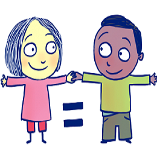

El derecho del niño a la igualdad en los niños pretende conseguir que todos los niños sean tratados de la misma forma, sean del origen que sean y se encuentren en el país que se encuentren. Los gobiernos por su parte tienen el compromiso de hacer cumplir este derecho.

¿Por qué es importante el derecho del niño a la igualdad?
En los niños pretende conseguir que todos los niños sean tratados de la misma forma, sean del origen que sean y se encuentren en el país que se encuentren. Los gobiernos por su parte tienen el compromiso de hacer cumplir este derecho. Todo niño tiene derecho a ser respetado, está claro que no todos los niños son iguales, ni tienen las mismas costumbres, ni la misma educación, pero no por eso son diferentes y por tanto tienen el mismo derecho a ser respetado como individuo o como parte de una comunidad. La desigualdad suele ser una causa de la marginación y la explotación, y estas a su vez suelen ser una causa de la desigualdad, tanto económica como social, por lo tanto es un circulo vicioso del que es complicado salir y más aún para los niños que son más vulnerables y se ven convertidos en víctimas.
Historia de la declaración de los 10 Derechos del Niño
1. Derecho a la igualdad, sin distinción de raza, religión o nacionalidad.
2. Derecho a una protección especial que garantice el desarrollo físico, social y mental de todos los menores, tanto en condiciones normales como en situaciones adversas o crisis humanitarias.
3. Derecho a un nombre y a una nacionalidad desde el día del nacimiento.
4. Derecho a la alimentación, la vivienda y la asistencia médica adecuada.
5. Derecho a la educación. Si los niños sufrieran alguna discapacidad o una limitación física o mental, tendrán derecho a un tratamiento especial.
7. Derecho a una educación gratuita y a actividades recreativas.
8. Derecho a estar entre los primeros en una circunstancia adversa, como en las crisis humanitarias de cualquier índole.
9. Derecho a la protección ante el abandono, la crueldad y la explotación.
10. Derecho a ser educado con espíritu de comprensión, tolerancia, amistad entre los pueblos y hermandad universal.